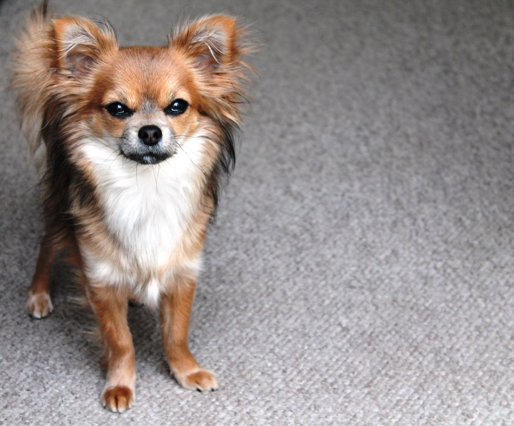
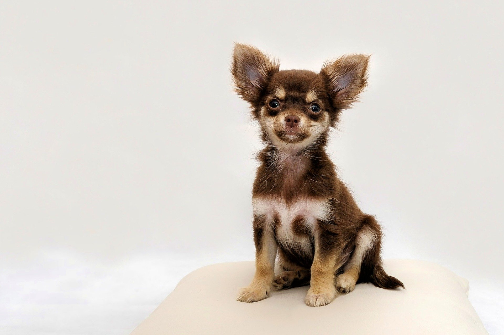
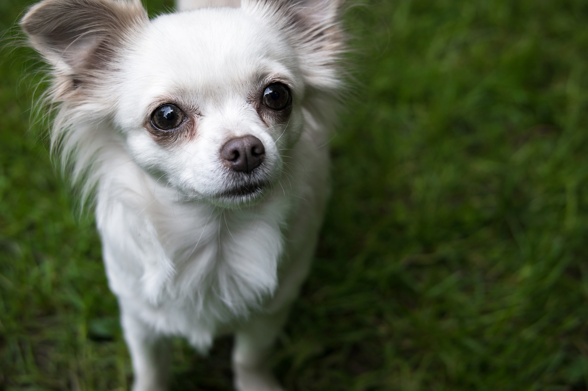

About Chihuahua Club
A club in Cardiff for chihuahuas and their owners:
- to make friends
- to go on walks together
- to share chihuahua wisdom
- and have fun.

Meet Ups
We meet every Tuesday morning, 10am at Parc Tredelerch and Sunday afternoons, 3pm at Roath Park Rose Garden.
Your chihuahua can meet friends their own size, go at their own pace and enjoy some exercise and fresh air. You can meet people with a common love of chi and share your stories and experiences about your little friend.
People and chihuahuas of all ages welcome.
Contact Us
Please get in touch if you'd like to chat about Cardiff Chihuahua Club or the joy of chihuahuas.
We are on Facebook and Insta, and you are welcome to email or message anytime.
We look forward to meeting you and your chi.
